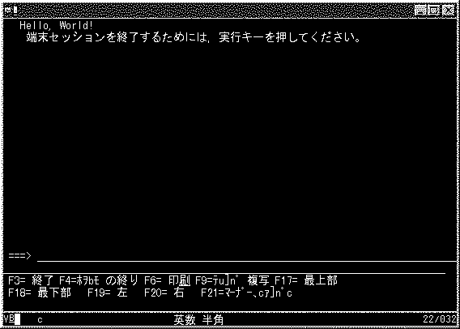

|
Ｃ言語の入門者が最初に書くプログラムは画面に”Hello，World！"って表示するのが昔からのしきたりだそうです。理由は知りませんが．．.
と言う訳なので、まだ何も解説してませんが、とりあえず下記のソースコードを入力して、コンパイルして、実行しましょう。
最初のプログラム LIST1
/* 最初のプログラムは"Hello,World!"を表示する */
#include<stdio.h>
void main(){
printf("Hello, World! ??/n");
}
|
ソースコードを打ち込んだら、CRTBNDC コマンドを使用してコンパイルしてください。もしエラーがでたら
コンパイルリストを印刷してエラーの内容を確認して修正してください。コンパイルリストを出力するには、CRTBNDCコマンドでOUTPUT(*PRINT)を指定します。
コンパイルが完了したら実行してみましょう。実行するコマンドはCALL PGM(LIST1)です。
画面にHello World！と表示されましたか？表示されれば、ＯＫです。
LIST1実行結果イメージ

でも、見慣れない画面ですね、これはDSM（ダイナミックスクリーンマネージャー）という画面です。
PCやUNIXのコマンドライン画面と似た動きをします。行単位に画面Ｉ／Ｏが行われます。Ｃ言語で標準入力／標準出力を行うと自動的にこのＤＳＭ画面が使用されます。ＯＳ／４００のｆｔｐクライアントやネイティブ・ドミノのコンソールでも使用されています。ＤＳＭ画面はＩＮＰＵＴ／ＯＵＴＰＵＴという名称でオーバーライドを行うことが可能ですので、画面入力をファイルから行いたい場合は、ＩＮＰＵＴにＰＦをオーバーライドすることで、入力を切り替えることが可能です。
OS/400以外のプラットフォームでは、標準入力を使ってパイプやリダイレクトが出来たりします。
たとえば、＃ＰＧＭＡ｜ＰＧＭＢとすると
ＰＧＭＡの出力結果がそのままＰＧＭＢの入力データとすることができます。
これはどちらかというとＣ言語というより、shellなどの機能になります。ＡＳ／４００ではshellに相当するものがありませんので、（ＱＳＨＥＬＬ解釈プログラムと言う機能がありますが、まだ一般的でないのと、機能が限定的なので取りあえずなしと言うことにしてください）今後の機能拡張がまたれるところです。
ところでソースコードの表示文字の中に見慣れない文字があります。
”Hello, World!??/n”の？？／ｎです。
これは、画面には表示されませんでした。何でしょう
試しに、この部分を取り除いた、以下のコードを実行して見てください。
？？／ｎを取り除いたプログラム LIST2
/* 改行なしのプログラム */
#include<stdio.h>
void main(){
printf("Hello, World!");
printf("Hello, World!");
}
|
どうなりましたか？
次に以下のコードを実行してください
改行付きのプログラム LIST3
/* 改行付きのプログラム */
#include<stdio.h>
void main(){
printf("Hello, World!??/n");
printf("Hello, World!??/n");
}
|
どうなりましたか？
”？？／”は三文字表記で'￥'を表しますので、”？？／ｎ”は”￥ｎ”と書いたのと同じことです。これは改行を意味する拡張表記です。これ意外にも、以下の拡張表記が可能です。
主な拡張表記
| \a |
警報 (ベル) |
| \b |
後退 |
| \f |
用紙送り (改ページ) |
| \n |
復帰改行 |
| \r |
復帰 |
| \t |
水平タブ |
| \v |
垂直タブ |
| \' |
一重引用符 |
| \" |
二重引用符 |
| \? |
疑問符 |
| \\ |
円記号 |
| \x00 |
１６進数 |
| \00 |
８進数 |
？？／ｎが改行を表すことが解かりました。？？／ｎは￥ｎと同じ意味だということも解かりました。それでは、￥ｎを実行してみましょう。
改行付きのプログラム LIST4
/* 改行付きのプログラム */
#include<stdio.h>
void main() {
printf("Hello, World!\n");
printf("Hello, World!\n");
}
|
多分、直接’￥ｎ’と記入した場合は、そのまま’￥ｎ’って画面上に表示されたと思います。
これは、コードページ５０３５の場合は、￥と＄を同じコードページ内に納めるため、’￥’文字のＨＥＸコードが別のコードをふられているためにＣのコンパイラーは、制御コードの始まりの’￥’として扱わず、通常の文字と同じ扱いをするために起こります。コードページ５０３５の環境でで制御コード（拡張表記）の始めの文字として扱われる文字は、バックスラッシュになります。
次はどうでしょう。
改行付きのプログラム LIST5
/* 改行付きのプログラム */
#include<stdio.h>
void main() {
printf("Hello, World!??x15");
printf("Hello, World!??x15");
}
|
AS/400では復帰改行の制御コードはｘ１５になります。ですから、そのままHEXコードを使用しても結果は同じく改行されます。ただし、他のプラットフォームに移植する場合は、書き換える必要が発生しますのでこうゆうプラットフォーム固有のコードの移植性は低くなりますし、コードの見通しも悪くなります。
ところで、実行するつど、DSM画面に前回の実行結果が残っていて美しくありませんね。
いったん、画面をクリアしてから表示するようにしたいですね。
システムＡＰＩを使ってみましょう！！
システムＡＰＩでＤＳＭ画面クリアプログラム LIST6
/* ＤＳＭのシステムＡＰＩプログラム */
#include<stdio.h>
#include "QSYSINC/H/QSNAPI"
void main() {
QsnClrScl(_C_Get_Ssn_Handle(), '0', NULL);
printf("Hello, World!??/n");
}
|
#include "QSYSINC/H/QSNAPI"が一行増えました。これはＲＰＧの/ＣＯＰＹと同じ働きをします。元のファイルＱＳＹＳＩＮＣライブラリーのＨファイルのＱＳＮＡＰＩメンバーを表示して見てください。その中に、画面をクリアするＡＰＩのQsnClrSclが定義されています。
QsnClrScl(セッション・ハンドル,サイズ変更指示,エラー・コード)
セッションハンドルは現在使用している画面のＩＤです。この値をとるために_C_Get_Ss_Handle()関数を実行してます。この関数は、現在使用しているセッション・ハンドルを戻します。この関数はstdio.hの中に定義されています。
上記の文は、以下のようにもかくことが可能です
システムＡＰＩでＤＳＭ画面クリアプログラム LIST7
/* ＤＳＭのシステムＡＰＩプログラム */
#include<stdio.h>
#include "QSYSINC/H/QSNAPI"
void main() {
Qs Ssn_hd;
Ssn_hd = _C_Get_SsnHandle();
QsnClrScl(Ssn_hd, '0', NULL);
printf("Hello, World!??/n");
}
|
C言語では、関数の戻り値をそのまま次の関数の引数にできます。
ＲＰＧなら必ずワークのフィールドの定義が必要になるところですが、Ｃ言語では中間ワーク的なフィールドは定義する必要はありません。
他の章で詳細は解説しますが、Ｃ言語の関数は、引数と戻り値をもちます。
ＲＰＧでは、外部のサブＰＧＭを呼び出す場合は、パラメーターとして値の受渡しのみで戻り値はありません。
Ｃ言語では、ＲＰＧのパラメーターに相当するものが、引数であり、それとは別に戻り値を帰しますので、その戻り値を利用して、次の関数の引数とすることが出来る訳です。
|